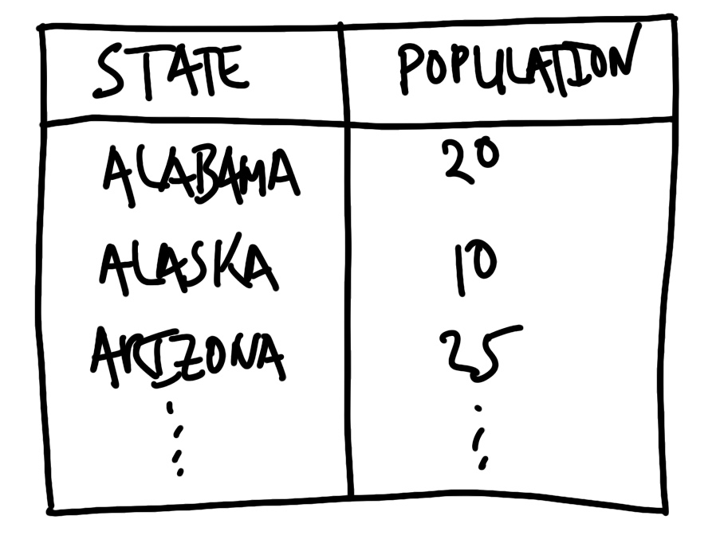
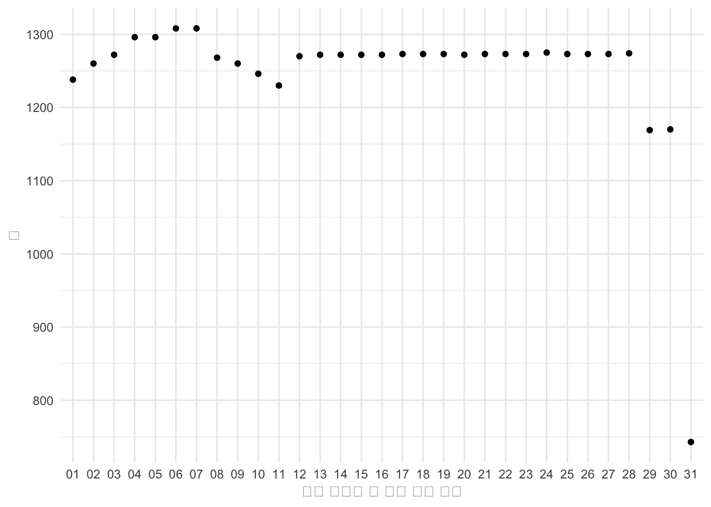
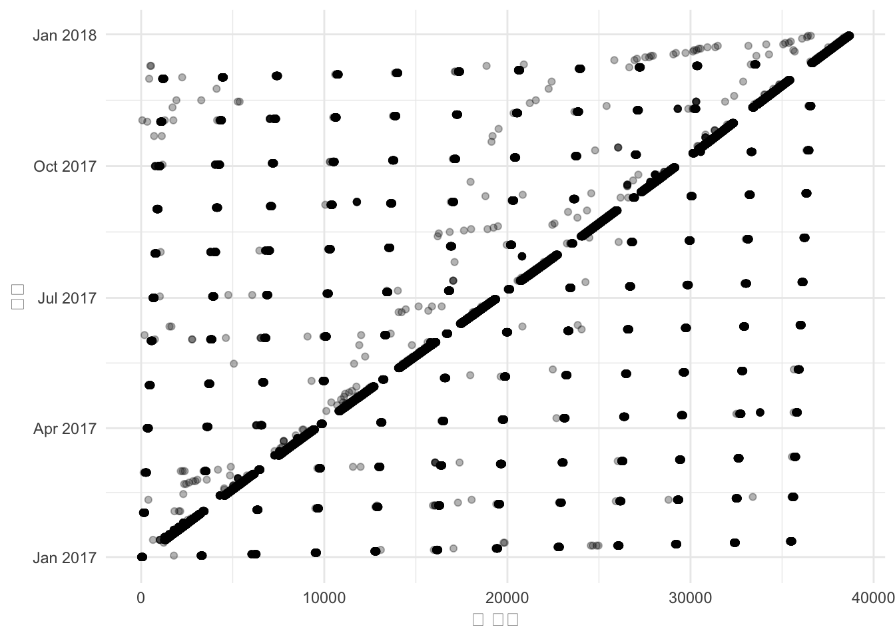

── Conflicts ────────────────────────────────────────── tidyverse_conflicts() ──
✖ readr::col_factor() masks scales::col_factor()
✖ purrr::discard() masks scales::discard()
✖ readr::edition_get() masks testthat::edition_get()
✖ dplyr::filter() masks stats::filter()
✖ purrr::is_null() masks testthat::is_null()
✖ dplyr::lag() masks stats::lag()
✖ readr::local_edition() masks testthat::local_edition()
✖ dplyr::matches() masks tidyr::matches(), testthat::matches()
ℹ Use the conflicted package (<http://conflicted.r-lib.org/>) to force all conflicts to become errors
library(tinytable)# library(validate)
9.1 서론
“음, 린든, 당신이 옳을 수도 있고 그들이 당신이 말하는 것처럼 똑똑할 수도 있습니다.” 레이번이 말했다. “하지만 그들 중 단 한 명이라도 보안관에 출마했다면 훨씬 더 좋았을 것입니다.”
존 F. 케네디의 새 내각에 대한 린든 존슨의 열정에 대한 샘 레이번의 반응, The Best and the Brightest(Halberstam 1972, p. 41)에서 인용.
이 장에서는 데이터 정리 및 준비를 위한 보다 공식적인 접근 방식을 제시합니다. 이는 다음을 중심으로 합니다.
타당성;
내부 일관성; 그리고
외부 일관성.
당신의 모델은 데이터 유효성 검사를 했는지 신경 쓰지 않지만, 당신은 해야 합니다. 타당성은 데이터셋의 값이 명백히 틀리지 않다는 것을 의미합니다. 예를 들어, 몇 가지 예외를 제외하고 통화에는 문자가 없어야 하고, 이름에는 숫자가 없어야 하며, 속도는 빛의 속도보다 빠르지 않아야 합니다. 내부 일관성은 데이터셋이 자체적으로 모순되지 않는다는 것을 의미합니다. 예를 들어, 구성 열이 총 열에 합산된다는 것을 의미할 수 있습니다. 외부 일관성은 데이터셋이 일반적으로 외부 소스와 모순되지 않으며, 모순될 경우 의도적이라는 것을 의미합니다. 예를 들어, 우리의 데이터셋이 도시 인구에 관한 것이라고 주장한다면, 우리는 대략적으로 관련 인구 조사에서 사용 가능한 것과 동일할 것으로 예상할 것입니다.
미국 로켓 회사인 SpaceX는 로켓을 제어하기 위해 10 또는 50 헤르츠(각각 0.1 및 0.02초에 해당) 주기를 사용합니다. 각 주기마다 온도 및 압력과 같은 센서의 입력이 읽히고 처리되며, 일부 설정을 조정할지 여부와 같은 결정을 내리는 데 사용됩니다(Martin 와/과 Popper 2021). 우리는 데이터 정리 및 준비 중에 작은 조정을 반복하는 유사한 반복적 접근 방식을 권장합니다. 처음부터 모든 것을 완벽하게 만들려고 노력하기보다는, 작은 지속적인 개선 과정을 통해 시작하고 반복하십시오.
데이터 정리 및 준비의 역할은 너무 커서 데이터셋을 이해하는 유일한 사람들은 그것을 정리한 사람들뿐입니다. 그러나 데이터 정리의 역설은 종종 정리 및 준비를 하는 사람들이 결과 데이터셋에 대한 신뢰가 가장 적다는 것입니다. 모든 데이터 과학 워크플로의 어느 시점에서는 모델링을 하는 사람들이 데이터 정리를 해야 합니다. 비록 그것을 하고 싶어하는 사람은 거의 없지만(Sambasivan 기타 2021), 모델링만큼이나 영향력이 있을 수 있습니다. 데이터를 정리하고 준비하는 것은 많은 결정을 내리는 것이며, 그 중 일부는 결과에 중요한 영향을 미칠 수 있습니다. 예를 들어, (labelsiswrongs는?) 컴퓨터 과학의 일부 인기 있는 데이터셋의 테스트 세트에 평균적으로 약 3%의 잘못된 레이블이 포함되어 있음을 발견했습니다. (Banes2022는?) 수마트라 오랑우탄 (Pongo abelii) 참조 게놈을 다시 검토하고 10개 샘플 중 9개에 문제가 있음을 발견했습니다. 그리고 (eveninaccountingwhat는?) 회사의 회계 데이터의 제출된 버전과 표준화된 버전 사이에 상당한 차이가 있음을 발견했습니다. 특히 복잡한 재정 상황의 경우 더욱 그렇습니다. 케네디 내각이 지능에도 불구하고 실무 경험이 있기를 바랐던 샘 레이번처럼, 데이터 과학자는 데이터셋의 지저분한 현실에 몰두해야 합니다.
심리학에서 일찍이 확인되었지만(Open Science Collaboration 2015) 이후 물리 및 사회 과학의 다른 많은 분야로 확장된 재현성 위기는 p-값 “해킹”, 연구자 자유도, 파일 서랍 문제, 심지어 데이터 및 결과 조작과 같은 문제를 드러냈습니다(Gelman 와/과 Loken 2013). 이제 이러한 문제를 해결하기 위한 조치가 취해지고 있습니다. 그러나 데이터 수집, 정리 및 준비 측면은 이러한 단계에서 내린 결정이 통계 결과에 크게 영향을 미친다는 증거에도 불구하고 상대적으로 거의 초점을 받지 못했습니다(Huntington-Klein 기타 2021). 이 장에서는 이러한 문제에 초점을 맞춥니다.
데이터 과학의 기반이 되는 통계적 관행은 시뮬레이션된 데이터셋에 적용될 때 자체적으로 정확하고 견고하지만, 데이터 과학은 일반적으로 일반적으로 적합되는 모델의 가정을 따르는 데이터로 수행되지 않습니다. 예를 들어, 데이터 과학자들은 “이질성, 복잡한 의존성 및 결측 패턴으로 오염된 지저분하고 필터링되지 않은, 그리고 아마도 깨끗하지 않은 데이터”에 관심이 있습니다. 이는 최근까지 더 전통적인 통계학자들 사이에서 정중한 대화에서 피했던 것입니다(Craiu 2019). 빅 데이터는 이 문제를 해결하지 못하며 심지어 악화시킬 수도 있습니다. 예를 들어, 데이터 문제를 조정하지 않고 품질이 낮은 더 많은 양의 데이터를 기반으로 한 모집단 추론은 단순히 더 자신 있게 틀린 결론으로 이어질 것입니다(Meng 2018). 응용 통계 연구에서 발견되는 문제는 반드시 연구자의 품질이나 편향과 관련이 있는 것은 아닙니다(Silberzahn 기타 2018). 대신, 그것들은 데이터 과학이 수행되는 맥락의 결과입니다. 이 장은 이 작업에 대해 명시적으로 생각하는 접근 방식과 도구를 제공합니다.
(gelman2020most는?) 지난 50년간의 가장 중요한 통계적 아이디어에 대해 글을 쓰면서, 각각이 데이터 분석에 대한 새로운 사고 방식을 가능하게 했다고 말합니다. 이러한 아이디어는 통계학의 영역으로 “취향이나 철학의 문제로 여겨졌던” 접근 방식을 가져왔습니다. 이 장에서 데이터 정리 및 준비에 초점을 맞추는 것은, 일반적으로 잘못되게도 핵심 통계적 관심사라기보다는 취향의 문제로 간주되는 측면을 성문화하거나 영역 안으로 가져오는 것과 유사합니다.
데이터 정리 및 준비를 위해 우리가 옹호하는 워크플로는 다음과 같습니다.
원본, 편집되지 않은 데이터를 저장합니다.
스케치 및 시뮬레이션을 통해 최종 목표를 염두에 두고 시작합니다.
테스트 및 문서를 작성합니다.
작은 샘플에 대해 계획을 실행합니다.
계획을 반복합니다.
실행을 일반화합니다.
테스트 및 문서를 업데이트합니다.
우리는 효과적이기 위해 다양한 기술이 필요하지만, 이것이 바로 데이터 과학의 핵심입니다. 필요한 접근 방식은 끈기 있고 합리적인 것의 조합입니다. 데이터 정리와 관련하여 완벽은 좋은 것의 적입니다. 그리고 구체적으로 말하면, 데이터의 90%를 정리하고 준비한 다음, 나머지 10%를 정리하고 준비하는 데 드는 노력이 가치가 있는지 결정하기 전에 탐색을 시작하는 것이 좋습니다. 왜냐하면 그 나머지는 엄청난 시간과 노력을 필요로 할 것이기 때문입니다.
농업, 수집 또는 사냥을 통해 얻었는지 여부에 관계없이 모든 데이터에는 문제가 있습니다. 우리는 다양한 문제를 다룰 수 있는 접근 방식이 필요하며, 더 중요하게는 그것들이 모델링에 어떻게 영향을 미칠 수 있는지 이해해야 합니다(Van den Broeck 기타 2005). 데이터를 정리하는 것은 데이터를 분석하는 것입니다. 왜냐하면 이 과정은 결과에서 우리가 중요하게 생각하는 것에 대해 선택을 하도록 강요하기 때문입니다(Au 2020).
9.2 워크플로
9.2.1 원본, 편집되지 않은 데이터 저장
첫 번째 단계는 원본, 편집되지 않은 데이터를 별도의 로컬 폴더에 저장하는 것입니다. 원본, 편집되지 않은 데이터는 재현성의 기초를 확립합니다(Wilson 기타 2017). 데이터를 정부 웹사이트와 같은 제3자로부터 얻었다면, 우리는 그들이 해당 데이터를 계속 호스팅할지, 업데이트할지, 또는 사용 가능한 주소를 변경할지 여부에 대해 통제할 수 없습니다. 로컬 사본을 저장하는 것은 또한 그들의 서버에 부과하는 부담을 줄여줍니다.
원본, 편집되지 않은 데이터를 로컬에 저장한 후에는 해당 상태로 사본을 유지하고 수정하지 않아야 합니다. 우리가 그것을 정리하고 준비하기 시작할 때, 우리는 대신 데이터셋의 사본에 이러한 변경 사항을 적용합니다. 원본, 편집되지 않은 데이터셋을 유지하고, 우리가 분석하고자 하는 데이터셋을 생성하는 데 필요한 스크립트를 사용하면 전체 워크플로가 재현 가능하도록 보장됩니다. 오늘 우리가 내리기로 결정한 변경 사항이 데이터셋에 대해 더 많이 알게 된 후 내일 내릴 변경 사항이 아닐 수도 있습니다. 우리는 필요할 경우 원본, 편집되지 않은 상태의 데이터를 가지고 있는지 확인해야 합니다(Borer 기타 2009).
우리는 항상 원본, 편집되지 않은 데이터를 공유할 수 없을 수도 있지만, 거의 항상 유사한 것을 만들 수 있습니다. 예를 들어, 제한된 사용 컴퓨터를 사용하는 경우, 가장 좋은 방법은 주요 기능을 전달하는 원본, 편집되지 않은 데이터의 시뮬레이션된 버전을 만들고, README 파일에 자세한 접근 지침을 포함하는 것일 수 있습니다.
9.2.2 계획
최종 목표를 계획하는 것은 끝을 염두에 두고 시작하도록 강요하며 다양한 이유로 중요합니다. sec-gather-data에서 소개된 데이터 스크래핑과 마찬가지로, 범위 확장을 사전에 방지하는 데 도움이 됩니다. 그러나 데이터 정리에서는 최종 데이터셋이 어떻게 생겼으면 하는지에 대해 정말로 생각하도록 강요합니다.
첫 번째 단계는 관심 있는 데이터셋을 스케치하는 것입니다. 스케치의 주요 특징은 열의 이름, 클래스 및 가능한 값 범위와 같은 측면입니다. 예를 들어, 미국 주의 인구에 관심이 있을 수 있습니다. 우리의 스케치는 그림 fig-sketchdataplan과 같을 수 있습니다.

그림 9.1: 미국 주 및 인구의 계획된 데이터셋
이 경우, 스케치는 주 이름에 대해 약어가 아닌 전체 이름을 원하고, 인구를 백만 단위로 측정하기로 결정하도록 강요합니다. 이 최종 목표를 스케치하는 과정은 우리가 일찍 결정을 내리고 원하는 최종 목표에 대해 명확하게 하도록 강요했습니다.
그런 다음 코드를 사용하여 데이터를 시뮬레이션합니다. 다시, 이 과정은 우리가 어떤 함수를 사용할지 결정해야 하므로 데이터셋에서 합리적인 값이 어떻게 보이는지에 대해 생각하도록 강요합니다. 각 변수의 고유한 값에 대해 신중하게 생각해야 합니다. 예를 들어, 변수가 “성별”을 의미한다면 “남성”, “여성”, “기타”, “알 수 없음”과 같은 고유한 값이 예상될 수 있지만, “1,000”과 같은 숫자는 잘못되었을 가능성이 높습니다. 또한 함수 출력을 변수에 할당해야 하므로 이름에 대해 명시적으로 생각하도록 강요합니다. 예를 들어, 미국 주에 대한 일부 인구 데이터를 시뮬레이션할 수 있습니다.
set.seed(853)simulated_population <-tibble(state = state.name,population =runif(n =50, min =0, max =50) |>round(digits =2) )simulated_population
# A tibble: 50 × 2
state population
<chr> <dbl>
1 Alabama 18.0
2 Alaska 6.01
3 Arizona 24.2
4 Arkansas 15.8
5 California 1.87
6 Colorado 20.2
7 Connecticut 6.54
8 Delaware 12.1
9 Florida 7.9
10 Georgia 9.44
# ℹ 40 more rows
이 단계에서 타당성 및 내부 일관성에 대해 생각하기 시작하십시오. 이 데이터가 가져야 할 기능은 무엇입니까? 데이터셋을 시뮬레이션하는 과정에서 이것들을 기록하십시오. 왜냐하면 이것들을 사용하여 테스트를 작성할 것이기 때문입니다.
9.2.3 작게 시작
철저하게 계획한 후에는 우리가 다루고 있는 원본, 편집되지 않은 데이터로 전환할 수 있습니다. 일반적으로 우리는 원본, 편집되지 않은 데이터를 가능한 한 빨리 직사각형 데이터셋으로 조작하려고 합니다. 이렇게 하면 익숙한 tidyverse 함수를 사용할 수 있습니다. 예를 들어, .txt 파일로 시작한다고 가정해 봅시다.
첫 번째 단계는 데이터셋에서 규칙성을 찾는 것입니다. 우리는 테이블 형식의 데이터로 끝나기를 원하며, 이는 다른 열을 구별하기 위한 어떤 종류의 구분 기호가 필요하다는 것을 의미합니다. 이상적으로는 쉼표, 세미콜론, 탭, 이중 공백 또는 줄 바꿈과 같은 기능일 수 있습니다. 다음 경우에는 쉼표를 활용할 수 있습니다.
앨라배마, 5
알래스카, 0.7
애리조나, 7
아칸소, 3
캘리포니아, 40
더 어려운 경우에는 데이터셋에 활용할 수 있는 어떤 규칙적인 기능이 있을 수 있습니다. 때로는 다양한 텍스트가 반복됩니다. 다음 경우와 같습니다.
주는 앨라배마이고 인구는 5백만입니다.
주는 알래스카이고 인구는 0.7백만입니다.
주는 애리조나이고 인구는 7백만입니다.
주는 아칸소이고 인구는 3백만입니다.
주는 캘리포니아이고 인구는 40백만입니다.
이 경우, 전통적인 구분 기호는 없지만, “주는”, “이고 인구는”, “백만”의 규칙성을 사용하여 필요한 것을 얻을 수 있습니다. 더 어려운 경우는 줄 바꿈이 없는 경우입니다. 이 마지막 경우는 그것을 보여줍니다.
앨라배마 5 알래스카 0.7 애리조나 7 아칸소 3 캘리포니아 40
이것을 접근하는 한 가지 방법은 우리가 찾고 있는 다른 클래스와 값을 활용하는 것입니다. 예를 들어, 우리는 미국 주를 찾고 있다는 것을 알고 있으므로 가능한 옵션은 50가지뿐이며(DC는 잠시 제쳐두고), 이것들을 구분 기호로 사용할 수 있습니다. 또한 인구가 숫자라는 사실을 사용하여 공백 뒤에 숫자가 오는 것을 기준으로 분리할 수도 있습니다.
이제 이 마지막 경우를 정돈된 데이터로 변환할 것입니다.
unedited_data <-c("앨라배마 5 알래스카 0.7 애리조나 7 아칸소 3 캘리포니아 40")tidy_data <-tibble(raw = unedited_data) |>separate(col = raw,into = letters[1:5],sep ="(?<=[[:digit:]]) "# 숫자 뒤에 오는 괄호 ) |>pivot_longer(cols = letters[1:5],names_to ="drop_me",values_to ="separate_me" ) |>separate(col = separate_me,into =c("state", "population"),sep =" (?=[[:digit:]])"# 숫자 뒤에 오는 공백 ) |>select(-drop_me)tidy_data
# A tibble: 5 × 2
state population
<chr> <chr>
1 앨라배마 5
2 알래스카 0.7
3 애리조나 7
4 아칸소 3
5 캘리포니아 40
9.2.4 테스트 및 문서 작성
직사각형 데이터셋을 설정했지만, 지저분한 데이터셋이므로, 우리가 가지고 있는 클래스를 살펴보기 시작해야 합니다. 이 시점에서 클래스를 수정할 필요는 없습니다. 왜냐하면 데이터 손실이 발생할 수 있기 때문입니다. 그러나 클래스가 무엇인지 확인하고, 시뮬레이션된 데이터셋과 비교하고, 변경해야 할 사항을 확인하기 위해 다른 열을 기록합니다. class()에 대한 배경 정보는 온라인 부록 sec-r-essentials에서 확인할 수 있습니다.
클래스를 변경하기 전과 더 맞춤형 문제로 넘어가기 전에, 다음과 같은 일반적인 문제를 처리해야 합니다.
숫자여야 하는 변수에 있는 쉼표 및 기타 구두점($, €, £ 등)과 같은 통화 기호.
“December”와 “Dec” 및 “12”가 모두 한 변수에 있는 것과 같은 일관성 없는 날짜 형식.
일반적으로 즉시 명백한 것은 무엇이든 수정하려고 합니다. 예를 들어, 통화에서 숫자를 그룹화하는 데 사용된 쉼표는 제거해야 합니다. 그러나 상황은 종종 압도적으로 느껴질 것입니다. 우리가 해야 할 일은 각 변수의 고유한 값을 살펴보고, 무엇을 수정할지 분류하는 것입니다. 우리는 가장 큰 영향을 미칠 가능성이 있는 것을 기준으로 분류 결정을 내립니다. 이는 일반적으로 관측치의 수를 세고, 내림차순으로 정렬한 다음, 이 순서대로 처리하는 것을 의미합니다.
멤버십 테스트가 통과되면(처음에는 시뮬레이션과 경험을 기반으로 설정함) 클래스를 변경하고 모든 테스트를 다시 실행할 수 있습니다. 우리는 이 아이디어를 소프트웨어 개발의 단위 테스트 접근 방식에서 채택했습니다. 테스트는 소프트웨어(또는 이 경우 데이터)가 우리의 목적에 적합한지 이해할 수 있게 해주기 때문에 중요합니다(Irving 기타 2021). 테스트, 특히 데이터 과학에서는 한 번 작성하고 잊어버리는 정적인 것이 아닙니다. 대신 필요에 따라 업데이트되고 진화해야 합니다.
아, 그것에 대해 좋은 데이터가 있다고 생각하는군요!
현실의 단순화는 스포츠 기록에서 특히 두드러지게 나타나며, 이는 반드시 무엇을 기록할지 선택해야 합니다. 스포츠 기록은 어떤 목적에는 적합하지만 다른 목적에는 적합하지 않습니다. 예를 들어, 체스는 흑백 사각형이 번갈아 나타나는 8x8 보드에서 진행됩니다. 사각형은 문자(A-G)와 숫자(1-8)의 고유한 조합으로 표시됩니다. 대부분의 말은 고유한 약어를 가지고 있습니다. 예를 들어 나이트는 N이고 비숍은 B입니다. 각 게임은 각 플레이어가 이 “대수 표기법”을 사용하여 독립적으로 기록됩니다. 이러한 기록을 통해 게임의 움직임을 재현할 수 있습니다. 2021년 체스 세계 선수권 대회는 매그너스 칼슨과 이안 네폼니아치치 사이에서 진행되었습니다. 이 게임은 특히 주목할 만한 여러 가지 이유가 있었는데, 가장 긴 세계 선수권 대회 게임이었다는 점을 포함하여, 칼슨과 네폼니아치치 모두 예상치 못한 실수를 저질렀다는 점입니다. 예를 들어, 33번째 수에서 칼슨은 기회를 활용하지 못했고, 36번째 수에서 다른 수를 두었다면 네폼니아치치에게 유망한 엔드게임을 제공했을 것입니다(Doggers 2021). 이러한 실수 중 한 가지 이유는 게임의 그 시점에서 두 플레이어 모두 남은 시간이 거의 없었기 때문일 수 있습니다. 즉, 그들은 매우 빠르게 수를 결정해야 했습니다. 그러나 게임 시트에서 제공하는 표현에는 남은 시간이 기록되지 않기 때문에 그러한 감각이 없습니다. 기록은 게임에서 일어난 일의 “정확한” 표현으로서 목적에 적합하지만, 반드시 왜 일어났는지에 대한 것은 아닙니다.
약간 잘못된 문자열 모음으로 예시를 살펴보겠습니다. 이러한 유형의 출력은 sec-gather-data에서 소개된 OCR의 일반적인 출력이며, 종종 거의 완벽하지만 완전히는 아닙니다.
가장 흔한 고유 관측치는 올바른 것입니다. 다음 관측치인 “PatricIa”는 “i”가 잘못 대문자로 표시된 것 같습니다. “PatrIcia”도 마찬가지입니다. str_to_title()을 사용하여 대문자 문제를 해결할 수 있습니다. 이 함수는 문자열의 각 단어의 첫 글자를 대문자로, 나머지는 소문자로 변환한 다음 개수를 다시 계산합니다.
이미 이전 30%에 비해 60%의 값이 올바르므로 훨씬 나아졌습니다. “8tricia”와 “Ptricia”라는 두 가지 명확한 오류가 더 있습니다. 전자는 “P” 대신 “8”로 구분되고, 후자는 “a”가 누락되었습니다. str_replace_all()을 사용하여 이러한 문제를 해결할 수 있습니다.
# A tibble: 3 × 2
names n
<chr> <int>
1 "Patricia" 8
2 "Patric1a" 1
3 "Patricia " 1
우리는 많은 노력 없이 80%의 결과를 달성했습니다. 마지막 두 가지 문제는 더 미묘합니다. 첫 번째는 “i”가 “1”로 잘못 코딩되었기 때문에 발생했습니다. 일부 글꼴에서는 이것이 표시되지만 다른 글꼴에서는 보기 더 어려울 것입니다. 이것은 특히 OCR에서 흔한 문제이며, 주의해야 할 사항입니다. 두 번째는 후행 공백 때문에 발생합니다. 후행 및 선행 공백은 또 다른 일반적인 문제이며, str_trim()을 사용하여 해결할 수 있습니다. 이 두 가지 남은 문제를 해결하면 모든 항목이 수정됩니다.
# A tibble: 1 × 2
names n
<chr> <int>
1 Patricia 10
이 예시에서는 머릿속으로 테스트를 수행했습니다. 우리는 “Patricia”를 기대하고 있다는 것을 알고 있습니다. 그러나 이 테스트를 문서화하기 시작할 수도 있습니다. 한 가지 방법은 데이터셋에 “Patricia” 이외의 값이 있는지 확인하는 것입니다.
check_me <- cleaned_data |>filter(names !="Patricia")if (nrow(check_me) >0) {print("여전히 Patricia가 아닌 값이 있습니다!")}
조건이 충족되지 않으면 코드 실행을 중지하는 stopifnot()을 사용하여 좀 더 강력하게 만들 수 있습니다. 이 함수를 사용하려면 충족되기를 원하는 조건을 정의합니다. 이 유형의 검사를 코드 전체에 구현할 수 있습니다. 예를 들어, 데이터셋에 특정 수의 관측치가 있거나 특정 변수가 정수 또는 요인과 같은 다양한 속성을 가져야 한다고 예상하는 경우입니다.
stopifnot(nrow(check_me) ==0)
stopifnot()을 사용하여 스크립트가 예상대로 작동하는지 확인할 수 있습니다.
데이터셋에 대한 테스트를 작성하는 또 다른 방법은 testthat를 사용하는 것입니다. 패키지 테스트를 위해 개발되었지만, 데이터셋을 테스트하는 기능을 사용할 수 있습니다. 예를 들어, expect_length()를 사용하여 데이터셋의 길이를 확인하고 expect_equal()을 사용하여 내용을 확인할 수 있습니다.
# 데이터셋의 길이가 1입니까?expect_length(check_me, 1) # 관측치는 문자입니까?expect_equal(class(cleaned_data$names), "character") # 모든 고유 관측치는 "Patricia"입니까?expect_equal(unique(cleaned_data$names), "Patricia")
테스트가 통과하면 아무 일도 일어나지 않지만, 테스트가 실패하면 스크립트가 중지됩니다.
무엇을 테스트해야 할까요? 어려운 문제이며, 다음 섹션에서 더 구체적인 테스트 범위를 자세히 설명합니다. 그러나 일반적으로 우리가 가지고 있는 것을 우리가 예상하는 것과 비교하여 테스트합니다. 1960년대 아폴로 프로그램 소프트웨어 작업을 하던 엔지니어들은 처음에는 테스트 작성을 “귀찮은 일”로 여겼습니다(Mindell 2008, p. 170). 그러나 그들은 결국 NASA가 포괄적인 테스트 스위트가 동반되지 않으면 소프트웨어를 사용하여 사람을 달에 보낼 수 있다고 믿지 않을 것이라는 것을 깨달았습니다. 데이터 과학도 마찬가지입니다.
타당성 테스트부터 시작하십시오. 이들은 일반적으로 변수의 클래스, 고유한 값 및 관측치 수를 확인합니다. 예를 들어, 최근 데이터셋을 사용하는 경우 연도 열은 모든 요소가 네 자리 숫자이고 “2”로 시작하는지 테스트할 수 있습니다. (peterbaumgartnertesting은?) 이를 스키마에 대한 테스트라고 설명합니다.
그 후에는 내부 일관성 검사로 전환하십시오. 예를 들어, 다른 숫자 응답 변수가 있는 경우, 그 합계가 총 변수와 일치하는지 확인하거나, 그렇지 않다면 이 차이가 설명 가능한지 확인하십시오. 마지막으로 외부 일관성 테스트로 전환하십시오. 여기서는 외부 정보를 사용하여 테스트에 정보를 제공하려고 합니다. 예를 들어, 독일의 신생아 사망률(NMR) 변수가 있다면(sec-fire-hose에서 소개된 개념), 세계 보건 기구(WHO)의 추정치를 살펴보고 NMR 변수가 일치하는지 확인할 수 있습니다. 숙련된 분석가는 이 모든 것을 머릿속으로 합니다. 문제는 이것이 확장되지 않고, 일관성이 없으며, 명성에 과부하가 걸릴 수 있다는 것입니다. 모델링 맥락에서 이 문제에 대해서는 sec-its-just-a-linear-model에서 다시 다룹니다.
코드 전체에 테스트를 작성하며, 끝에만 작성하지 않습니다. 특히 중간 단계에 stopifnot() 문을 사용하면 데이터셋이 예상대로 정리되고 있는지 확인할 수 있습니다. 예를 들어, 두 데이터셋을 병합할 때 다음을 확인할 수 있습니다.
데이터셋의 변수 이름은 고유하며, 키로 사용될 열은 제외합니다.
각 유형의 관측치 수가 적절하게 전달되고 있습니다.
데이터셋의 차원이 예상치 않게 변경되지 않습니다.
9.2.5 반복, 일반화 및 업데이트
이제 계획을 반복할 수 있습니다. 가장 최근의 경우, 10개의 항목으로 시작했습니다. 이것을 100개 또는 심지어 1,000개로 늘릴 수 없는 이유는 없습니다. 정리 절차와 테스트를 일반화해야 할 수도 있습니다. 그러나 결국 데이터셋을 어떤 종류의 순서로 가져오기 시작할 것입니다.
9.3 확인 및 테스트
sec-on-writing에서 말했듯이, 린든 존슨의 전기 작가 로버트 카로는 미국 36대 대통령과 관련된 모든 사람을 추적하는 데 수년을 보냈습니다. 카로와 그의 아내 이나는 존슨이 어디 출신인지 더 잘 이해하기 위해 텍사스 힐 컨트리에서 3년 동안 살았습니다. 카로는 존슨이 상원 의원으로서 D.C.에 머물던 곳에서 상원까지 달려갔다는 소식을 듣고, 존슨이 왜 달렸는지 이해하기 위해 그 경로를 여러 번 직접 달렸습니다. 카로는 존슨이 그랬던 것처럼 해가 뜰 때 그 경로를 달렸을 때 비로소 이해했습니다. 즉, 해가 상원 로툰다에 특히 영감을 주는 방식으로 비친다는 것을 알게 되었습니다(Caro 2019, p. 156). 이러한 배경 작업은 그가 다른 누구도 알지 못했던 측면을 밝혀낼 수 있게 했습니다. 예를 들어, 존슨은 거의 확실히 첫 선거에서 승리를 훔쳤습니다(Caro 2019, p. 116). 우리는 이와 동일한 정도로 데이터를 이해해야 합니다. 우리는 비유적으로 모든 페이지를 넘겨보고 싶습니다.
음의 공간 개념은 디자인에서 잘 확립되어 있습니다. 이는 주제를 둘러싸고 있는 것을 의미합니다. 때로는 음의 공간이 효과로 사용됩니다. 예를 들어, 미국 물류 회사 FedEx의 로고는 E와 X 사이에 음의 공간이 있어 화살표를 만듭니다. 이와 유사하게, 우리는 우리가 가지고 있는 데이터와 가지고 있지 않은 데이터에 대해 인식해야 합니다(Hodgetts 2022). 우리는 우리가 가지고 있지 않은 데이터가 어떤 식으로든 의미를 가지고 있으며, 잠재적으로 우리의 결론을 바꿀 정도까지 의미를 가질 수 있다고 우려합니다. 데이터를 정리할 때, 우리는 이상 징후를 찾고 있습니다. 우리는 데이터셋에 있어야 하지만 없어야 하는 값뿐만 아니라 그 반대 상황, 즉 데이터셋에 있어야 하지만 없는 값에도 관심이 있습니다. 이러한 상황을 식별하는 데 사용하는 세 가지 도구는 그래프, 개수 및 테스트입니다.
우리는 또한 이러한 도구를 사용하여 올바른 관측치를 잘못된 것으로 변경하지 않도록 합니다. 특히 정리 및 준비에 여러 단계가 필요한 경우, 한 단계에서 수정된 내용이 나중에 취소될 수 있습니다. 우리는 그래프, 개수, 특히 테스트를 사용하여 이를 방지합니다. 이러한 것들의 중요성은 데이터셋의 크기에 따라 기하급수적으로 증가합니다. 작고 중간 규모의 데이터셋은 수동 검사 및 분석가에 의존하는 다른 측면에 더 적합하지만, 대규모 데이터셋은 특히 더 효율적인 전략을 필요로 합니다(Hand 2018).
9.3.1 그래프
그래프는 데이터를 정리할 때 귀중한 도구입니다. 왜냐하면 데이터셋의 각 관측치를 잠재적으로 다른 관측치와 관련하여 보여주기 때문입니다. 값이 속하지 않는 경우를 식별하는 데 유용합니다. 예를 들어, 값이 숫자여야 하지만 여전히 문자이면 플롯되지 않고 경고가 표시됩니다. 그래프는 숫자 데이터에 특히 유용하지만, 텍스트 및 범주형 데이터에도 여전히 유용합니다. 예를 들어, 청소년 설문 조사에서 사람의 나이에 관심이 있는 상황을 가정해 봅시다. 다음과 같은 데이터가 있습니다.
우리는 대부분의 데이터를 올바르게 얻는 데 집중하고 싶으므로 고유 값의 개수에 관심이 있습니다. 대부분의 데이터가 가장 일반적인 개수에 집중되기를 바랍니다. 그러나 그것을 뒤집어 특히 흔하지 않은 것이 무엇인지 보는 것도 유용할 수 있습니다. 이것들을 다루고 싶은 정도는 우리가 필요한 것에 따라 달라집니다. 궁극적으로, 우리가 하나를 수정할 때마다 우리는 매우 적은 추가 관측치를 얻습니다. 심지어 하나만 얻을 수도 있습니다. 개수는 텍스트 또는 범주형 데이터에 특히 유용하지만, 숫자 데이터에도 도움이 될 수 있습니다.
# A tibble: 5 × 2
country n
<chr> <int>
1 Australia 4
2 Australie 3
3 Aeustralia 1
4 Austraia 1
5 Austrelia 1
이 개수를 사용하면 시간을 어디에 투자해야 할지 알 수 있습니다. “Australie”를 “Australia”로 변경하면 사용 가능한 데이터 양이 거의 두 배가 됩니다.
간략하게 숫자 데이터로 돌아가서, (Preece1981은?) 변수의 각 관측치의 마지막 숫자의 개수를 플로팅할 것을 권장합니다. 예를 들어, 변수의 관측치가 “41.2”, “80.3”, “20.7”, “1.2”, “46.5”, “96.2”, “32.7”, “44.3”, “5.1”, “49.0”이라면, 0, 1, 5는 한 번씩 나타나고, 3, 7은 두 번씩 나타나고, 2는 세 번 나타납니다. 우리는 이러한 마지막 숫자가 균일하게 분포되어야 한다고 예상할 수 있습니다. 그러나 놀랍게도 종종 그렇지 않으며, 차이가 있는 방식은 유익할 수 있습니다. 예를 들어, 데이터가 반올림되었거나 다른 수집자에 의해 기록되었을 수 있습니다.
예를 들어, 이 장의 뒷부분에서 2019년 케냐 인구 조사에서 일부 데이터를 수집, 정리 및 준비할 것입니다. 여기서는 해당 데이터셋을 미리 사용하여 연령의 마지막 숫자의 개수를 살펴봅니다. 즉, 35세에서 “5”를 가져오고, 74세에서 “4”를 가져옵니다. 표 tbl-countofages는 일부 응답자가 연령에 대한 질문에 가장 가까운 5 또는 10으로 응답하기 때문에 발생하는 예상되는 연령 집중 현상을 보여줍니다. 그러한 패턴이 없는 연령 변수가 있다면 다른 유형의 질문에서 구성되었을 것으로 예상할 수 있습니다.
표 9.1: 2019년 케냐 인구 조사에서 나이로비의 단일 연령의 마지막 숫자의 개수에서 0과 5 숫자의 초과
나이의 마지막 숫자
횟수
0
347,233
1
278,930
2
308,933
3
285,745
4
270,355
5
303,817
6
246,582
7
242,688
8
207,739
9
216,355
9.3.3 테스트
sec-reproducible-workflows에서 말했듯이, 코드를 작성하면 프로그래머이지만, 재미로 코딩하는 사람과 예를 들어 제임스 웹 우주 망원경을 실행하는 코드를 작성하는 사람 사이에는 차이가 있습니다. Weinberg (1971, p. 122)에 따르면, 우리는 아마추어와 전문가를 후속 사용자의 존재를 기준으로 구별할 수 있습니다. 코딩을 처음 시작할 때, 일반적으로 자신만 사용할 코드를 작성합니다. 예를 들어, 수업 논문을 위해 코드를 작성할 수 있습니다. 성적을 받은 후에는 대부분의 경우 코드가 다시 실행되지 않습니다. 대조적으로, 전문가는 다른 사람들을 위해, 그리고 종종 다른 사람들과 함께 코드를 작성합니다.
오늘날 많은 학술 연구는 코드에 의존합니다. 그 연구가 지속적인 지식에 기여하려면, 그 연구의 기반이 되는 코드는 다른 사람들을 위해 작성되고 연구자가 다른 프로젝트로 이동한 후에도 잘 작동해야 합니다. 전문가는 코드가 다른 사람들에게 고려될 수 있도록 하는 작업에 적절한 주의를 기울입니다. 그 중 큰 부분은 테스트입니다.
Jet Propulsion Laboratory (2009, p. 14)는 사후 분석에서 “작성된 코드 100줄당 최소 하나의 결함을 발견한다”고 주장합니다. 테스트 없는 코드에 결함이 없다고 믿을 이유는 없으며, 단지 알려지지 않았을 뿐입니다. 따라서 가능한 한 코드에 테스트를 포함하도록 노력해야 합니다. 데이터 과학 코드를 테스트하기 위한 일부 인프라가 있습니다. 예를 들어, Python에는 (tdda의?) 테스트 주도 데이터 분석 라이브러리가 있지만, 더 많은 것이 필요합니다.
어떤 것들은 너무 중요해서 정리된 데이터셋에 반드시 포함되어야 합니다. 이것들은 우리가 확인해야 할 조건입니다. 일반적으로 경험, 전문가 지식 또는 계획 및 시뮬레이션 단계에서 나옵니다. 예를 들어, 연령 변수에는 음수가 없어야 하며, 110세 이상의 연령은 거의 없어야 합니다. 이러한 경우 특정 조건이 충족되어야 한다고 명시적으로 요구할 수 있습니다. 또 다른 예는 국가 간 분석을 수행할 때, 데이터셋에 있어야 한다고 알고 있는 국가 이름 목록이 유용할 것입니다. 우리의 테스트는 다음과 같을 것입니다.
해당 목록에 없지만 데이터셋에 있는 값, 또는 그 반대; 그리고
데이터셋에 있어야 한다고 예상했지만 없는 국가.
구체적인 예를 들기 위해 케냐의 5대 카운티에 대한 분석을 수행한다고 가정해 봅시다. 찾아보면 다음과 같습니다: “나이로비”, “키암부”, “나쿠루”, “카카메가”, “분고마”. 해당 변수를 생성할 수 있습니다.
이 시점에서 이것을 우리가 알고 있는 올바른 변수와 비교할 수 있습니다. 우리는 양방향으로 확인합니다. 즉, 올바른 변수에 있지만 데이터셋에 없는 것이 있는지, 그리고 데이터셋에 있지만 올바른 변수에 없는 것이 있는지 확인합니다. 우리는 확인 조건을 사용하여 완료되었는지 여부를 결정합니다.
if (all(top_five_kenya_fixed_1_8$county |>unique() %in% correct_kenya_counties)) {"정리된 카운티가 예상 국가와 일치합니다."} else {"모든 카운티가 완전히 정리되지 않았습니다."}
[1] "모든 카운티가 완전히 정리되지 않았습니다."
if (all(correct_kenya_counties %in% top_five_kenya_fixed_1_8$county |>unique())) {"예상 국가가 정리된 카운티에 있습니다."} else {"예상 국가가 정리된 카운티에 모두 없습니다."}
[1] "예상 국가가 정리된 카운티에 있습니다."
모든 카운티가 예상과 일치하지 않으므로 여전히 정리해야 할 것이 분명합니다.
9.3.3.1 테스트할 측면
클래스 및 날짜에 대한 명시적 테스트와 그것들이 잘못될 가능성이 얼마나 흔한지에 대해 이야기할 것입니다. 그러나 명시적으로 테스트를 고려해야 할 다른 측면은 다음과 같습니다.
통화 값 변수는 상황에 따라 합리적인 범위에 대해 테스트해야 합니다. 어떤 경우에는 음수 값이 불가능할 것입니다. 때로는 상한을 식별할 수 있습니다. 통화 변수는 숫자여야 합니다. 쉼표나 다른 구분 기호가 없어야 합니다. 통화 기호나 세미콜론과 같은 기호가 포함되어서는 안 됩니다.
인구 값 변수는 음수여서는 안 됩니다. 도시 인구는 100,000에서 50,000,000 사이여야 합니다. 다시 숫자여야 하며, 숫자만 포함해야 하고 기호는 없어야 합니다.
이름은 문자 변수여야 합니다. 숫자나 일부 제한된 기호가 포함되지 않을 수 있으며, 이는 맥락에 따라 다릅니다.
관측치 수는 의도치 않게 변경하기가 놀랍도록 쉽습니다. 의도적으로 발생하는 것은 괜찮지만, 우연히 발생하면 상당한 문제를 일으킬 수 있습니다. 관측치 수는 데이터 시뮬레이션에 대해 데이터 정리 프로세스 시작 시 테스트해야 하며, 이 예상은 필요에 따라 업데이트되어야 합니다. 데이터 정리 프로세스 전체에서 테스트해야 하지만, 특히 조인 전후에 테스트해야 합니다.
더 일반적으로, 전문가와 협력하고 사전 지식을 활용하여 관심 변수에 대한 합리적인 기능을 파악한 다음 이를 구현하십시오. 예를 들어, (scamswillnotsaveus가?) 사용자 수에 대한 주장에서 오류를 빠르게 식별할 수 있었던 방법을 고려하십시오. 이는 미국에서 연방 재정 지원을 받는 기관 수와 대략적으로 비교하여 이루어졌습니다.
validate를 사용하여 일련의 테스트를 설정할 수 있습니다. 예를 들어, 여기서는 명확한 문제가 있는 데이터를 시뮬레이션할 것입니다.
set.seed(853)dataset_with_issues <-tibble(age =c(runif(n =9, min =0, max =100) |>round(),1000 ),gender =c(sample(x =c("female", "male", "other", "prefer not to disclose"),size =9,replace =TRUE,prob =c(0.4, 0.4, 0.1, 0.1) ),"tasmania" ),income =rexp(n =10, rate =0.10) |>round() |>as.character() )dataset_with_issues
# A tibble: 10 × 3
age gender income
<dbl> <chr> <chr>
1 36 female 20
2 12 prefer not to disclose 16
3 48 male 0
4 32 female 2
5 4 female 1
6 40 female 13
7 13 female 13
8 24 female 7
9 16 male 3
10 1000 tasmania 2
이 경우, 불가능한 연령이 하나 있고, 성별 변수에 없어야 할 관측치가 하나 있으며, 마지막으로 소득은 숫자 대신 문자 변수입니다. validator()를 사용하여 데이터가 충족해야 할 규칙을 설정하고 confront()를 사용하여 충족하는지 여부를 결정합니다.
rules <-validator(is.numeric(age),is.character(gender),is.numeric(income), age <120, gender %in%c("female", "male", "other", "prefer not to disclose"))out <-confront(dataset_with_issues, rules)summary(out)
이 경우, 우리가 설정한 마지막 세 가지 규칙에 문제가 있음을 알 수 있습니다. 더 일반적으로, (datavalidationbook은?) 사용할 수 있는 많은 예시 테스트를 제공합니다.
sec-farm-data에서 언급했듯이, 성별은 특히 주의해야 할 사항입니다. 일반적으로 “남성” 또는 “여성”이 아닌 소수의 응답이 있을 것입니다. 상황에 따라 올바른 처리 방법이 다릅니다. 그러나 “남성” 또는 “여성” 이외의 응답이 데이터셋에서 제거되고 무시될 경우(너무 적기 때문에), 응답자에 대한 존중을 보여주기 위해 그들이 데이터셋의 나머지 부분과 어떻게 유사하거나 달랐는지에 대한 간략한 논의를 포함하는 것이 좋습니다. 플롯과 더 광범위한 논의는 부록에 포함될 수 있습니다.
9.3.3.2 클래스
미국인들은 돈에 집착하고, 영국인들은 계급에 집착한다고 말하기도 합니다. 데이터 정리 및 준비의 경우 우리는 영국인이 되어야 합니다. 클래스는 중요하며 특별한 주의를 기울여야 합니다. 온라인 부록 sec-r-essentials에서 클래스를 소개하며, 여기서는 “numeric”, “character”, “factor”에 초점을 맞춥니다. 변수의 클래스에 대한 명시적인 검사는 필수적입니다. 변수에 잘못된 클래스를 할당하면 후속 분석에 큰 영향을 미칠 수 있습니다. 다음이 중요합니다.
어떤 값이 숫자여야 하는지 또는 요인이어야 하는지 확인합니다. 그리고
값이 문자가 아닌 숫자인지 확인합니다.
값이 숫자인지 요인인지 명확히 하는 것이 왜 중요한지 이해하기 위해 다음 상황을 고려하십시오.
sec-its-just-a-linear-model에서 더 자세히 다룰 로지스틱 회귀를 사용하고, 먼저 “group”을 정수로 포함한 다음, 요인으로 포함합니다. 표 tbl-effect-of-class는 결과가 얼마나 다른지 보여주며, 회귀에 사용되는 변수의 클래스를 올바르게 얻는 것의 중요성을 강조합니다. 전자의 경우(group이 정수) 관측치의 다른 수준 간에 일관된 관계를 부과하는 반면, 후자의 경우(요인) 더 많은 자유를 허용합니다.
클래스는 너무 중요하고 미묘하며 분석에 해로운 영향을 미 미칠 수 있으므로, 클래스를 확인하는 일련의 테스트를 통한 분석이 더 신뢰할 수 있습니다. 이 스위트를 설정하는 것은 모델링 직전에 특히 가치가 있지만, 데이터 정리 및 준비의 일부로 설정하는 것이 좋습니다. 미국 독점 거래 회사인 Jane Street가 특정 프로그래밍 언어인 OCaml을 사용하는 한 가지 이유는 해당 유형 시스템이 클래스와 관련하여 더 신뢰할 수 있기 때문입니다(Somers 2015). 코드가 중요할 때 클래스는 매우 중요합니다.
컴퓨터 과학 전반에서 유형의 효과와 함의에 대한 많은 미해결 질문이 있지만, 일부 작업이 있었습니다. 예를 들어, (Gao2017는?) 정적 유형 시스템을 사용하면 프로덕션 JavaScript 시스템에서 약 15%의 오류를 잡을 수 있음을 발견했습니다. Typescript와 같은 언어가 개발되었으며, 이 경우 JavaScript와의 주요 차이점은 강력하게 유형화된다는 것입니다. (Turcotte2020은?) R에 유형 시스템을 추가하는 데 대한 몇 가지 고려 사항을 검토합니다. 그들은 기술적인 문제를 해결하는 데 도움이 되는 프로토타입을 개발했지만, 대규모 구현은 사용자가 변경해야 하는 필요성을 포함하여 여러 가지 이유로 어려울 것이라는 점을 인정합니다.
이 책에서 read_csv() 및 데이터를 가져오는 다른 함수를 사용할 때, 우리는 함수가 변수의 클래스를 추측하도록 허용했습니다. 앞으로는 더 의도적으로 “col_types”를 사용하여 직접 지정할 것입니다. 예를 들어, 다음 대신:
이것은 일반적으로 데이터셋을 처음 읽고, 빠르게 파악한 다음, 필요한 열과 클래스만 지정하여 제대로 읽는 반복적인 과정입니다. 이것은 약간의 추가 작업이 필요하지만, 클래스에 대해 명확하게 하는 것이 중요합니다.
9.3.3.3 날짜
날짜와 함께 작업할 것이라고 말할 때 누군가가 어떤 반응을 보이는지는 그 사람이 날짜와 함께 작업해 본 적이 있는지에 대한 시볼레스입니다. 만약 그들이 끔찍한 이야기를 공유한다면, 그들은 이전에 날짜와 함께 작업해 본 적이 있을 가능성이 높습니다!
날짜에 대한 광범위한 확인은 중요합니다. 이상적으로는 날짜가 YYYY-MM-DD 형식이어야 합니다. 더 넓은 세상에서 적절한 날짜 형식에 대한 의견 차이가 있습니다. 합리적인 사람들은 2022년 7월 1일 또는 2022년 7월 1일 중 어느 것이 더 나은지에 대해 의견이 다를 수 있지만, YYYY-MM-DD는 국제 표준이며 가능한 경우 날짜 변수에서 이를 사용해야 합니다.
유용할 수 있는 몇 가지 테스트는 다음과 같습니다.
열이 요일인 경우, 구성 요소가 월요일, 화요일, …, 일요일만 있는지 테스트합니다. 또한, 7일 모두 존재하는지 테스트합니다. 마찬가지로 월에 대해서도 테스트합니다.
각 월에 대한 일수가 적절한지 테스트합니다. 예를 들어, 9월이 30일인지 확인합니다.
데이터셋에서 날짜가 순서대로 있는지 확인합니다. 반드시 그럴 필요는 없지만, 종종 그렇지 않은 경우 탐색할 가치가 있는 문제가 있습니다.
연도가 분석 기간에 대해 완전하고 적절한지 확인합니다.
sec-fire-hose에서는opendatatoronto를 사용하여 2021년 토론토의 쉼터 사용량 데이터셋을 소개했습니다. 여기서는 날짜와 관련된 몇 가지 문제를 설명하기 위해 2017년의 동일한 데이터셋을 검토합니다. 먼저 데이터를 다운로드해야 합니다.2
날짜의 세 번째 구성 요소의 분포를 플로팅한 결과 문제가 있음을 분명히 알 수 있습니다(그림 fig-homeless-daycount-1). 특히 날짜의 분포가 대략 균일하지 않다는 점이 우려됩니다.
toronto_shelters_2017 |>separate( generated_date,into =c("one", "two", "three"),sep ="-",remove =FALSE ) |>count(three) |>ggplot(aes(x = three, y = n)) +geom_point() +theme_minimal() +labs(x ="점유 날짜의 세 번째 구성 요소",y ="수")toronto_shelters_2017 |>mutate(row_number =c(seq_len(nrow(toronto_shelters_2017)))) |>ggplot(aes(x = row_number, y = generated_date), alpha =0.1) +geom_point(alpha =0.3) +theme_minimal() +labs(x ="행 번호",y ="날짜" )

(a) 점유 날짜의 세 번째 구성 요소별 개수

(b) 행 번호와 날짜 비교
그림 9.3: 날짜를 더 자세히 검토
언급했듯이, 데이터셋을 정리할 때 특히 유용한 그래프 중 하나는 관측치가 데이터셋에 나타나는 순서입니다. 예를 들어, 일반적으로 날짜 순서대로 대략적인 순서가 있을 것으로 예상합니다. 이것이 사실인지 확인하기 위해 데이터셋에 나타나는 순서대로 날짜 변수를 그래프로 그릴 수 있습니다(그림 fig-homeless-daycount-2).
이것은 단지 빠른 그래프이지만 요점을 설명합니다. 즉, 많은 것이 순서대로 있지만 전부는 아닙니다. 순서대로라면 대각선을 따라 있을 것으로 예상할 것입니다. 데이터가 순서대로 있지 않다는 것은 이상합니다. 특히 처음에는 체계적인 것이 있는 것처럼 보이기 때문입니다. 데이터를 요약하여 날짜별 점유율을 얻을 수 있습니다.
월의 첫 12일 동안 문제가 있는 것으로 보입니다. 데이터를 보면 순서가 이상하다는 점을 지적했습니다. 그림 fig-homeless-daycount-2를 보면 많은 관측치에 영향을 미치는 체계적인 문제가 있는 것 같습니다. 일반적으로 날짜 변수에서 첫 12일이 거꾸로 되어 있을 수 있습니다. 즉, 연-월-일이라고 생각하지만 실제로는 연-일-월입니다. 그러나 예외도 있습니다. 첫 번째 단계로, 각 월의 첫 12일을 뒤집어 보면 도움이 되는지 확인할 수 있습니다. 상당히 무뚝뚝한 방법이지만, 도움이 되기를 바랍니다.
이 최대값과 시뮬레이션된 관계 8.4를 기반으로, 약간의 편차를 허용하더라도 마라톤 시간이 300분(30x8.4=252분)을 상당히 초과하는 것을 발견하면 놀랄 것입니다. (분명히, 마라톤을 달리는 데 이보다 더 오래 걸리는 것은 잘못된 것이 아니지만, 우리의 시뮬레이션 매개변수를 기반으로 할 때 믿을 수 없을 정도로 빠른 88분 마라톤 시간이 나올 것이므로 시뮬레이션을 개선해야 할 필요가 있습니다.)
그런 다음 이러한 테스트를 실제 데이터에 적용할 수 있습니다. 5킬로미터 및 마라톤 달리기 시간 간의 관계에 대한 실제 설문 조사 데이터는 (Vickers2016에서?) 사용할 수 있습니다. (Vickers2016이?) “추가 파일”로 제공하는 데이터를 다운로드한 후, 관심 있는 변수와 5킬로미터 시간 및 마라톤 시간을 모두 가진 개인에게만 초점을 맞출 수 있습니다.
가장 먼저 눈에 띄는 것은 데이터가 초 단위로 되어 있지만, 우리는 분 단위로 예상했다는 것입니다. 이것은 괜찮습니다. 우리의 시뮬레이션과 테스트를 업데이트하거나 데이터를 조정할 수 있습니다. 우리의 시뮬레이션과 테스트는 데이터가 약간 다르더라도(필연적으로 그럴 것입니다) 그 가치를 유지합니다.
이 경우, 시뮬레이션된 데이터를 위해 작성된 우리의 테스트는 15분보다 빠르거나 30분보다 긴 5킬로미터 달리기 시간을 식별합니다. 또한 300분보다 긴 마라톤 시간을 식별합니다. 이 데이터를 실제로 분석에 사용한다면, 다음 단계는 데이터를 플로팅하고, 테스트에서 식별된 각 지점을 검토한 다음, 테스트 또는 데이터셋을 조정하는 것입니다.
9.5 이름
프로그램은 사람들이 읽을 수 있도록 작성되어야 하며, 기계가 실행하는 것은 부수적인 일이다.
이름은 중요합니다. 이 책의 많은 부분이 쓰여진 땅은 오늘날 캐나다라고 불리지만, 오랫동안 터틀 아일랜드로 알려져 있었습니다. 마찬가지로, 호주 중앙에는 큰 바위가 있습니다. 오랫동안 울루루라고 불렸고, 그 다음에는 에어즈 록으로 알려졌습니다. 오늘날에는 두 가지 이름을 모두 사용하는 이중 이름을 가지고 있습니다. 그리고 사우스 캐롤라이나 주 의사당 주변의 표지판을 포함하여 미국 남부 일부 지역에서는 미국 남북 전쟁을 북부 침략 전쟁이라고 부릅니다. 이러한 예시에서 사용되는 이름은 사용자뿐만 아니라 상황에 대한 정보도 전달합니다. 심지어 영국 왕실도 이름의 힘을 인정합니다. 1917년에 그들은 작센-코부르크-고타 가문에서 윈저 가문으로 변경했습니다. 제1차 세계 대전을 고려할 때 전자가 너무 독일적이라고 느껴졌기 때문입니다. 이름은 일상생활에서 중요합니다. 그리고 우리 코드에서도 중요합니다.
코딩할 때 이름은 중요하며 특별한 주의를 기울여야 합니다. 왜냐하면 (Hermans 2021):
코드에 포함되어 코드를 문서화하는 데 도움이 됩니다.
모든 스크립트의 큰 부분을 차지합니다.
다른 사람들이 많이 참조합니다. 그리고
독자가 코드에서 무슨 일이 일어나고 있는지 이해하는 데 도움이 됩니다.
데이터의 본질을 존중하는 것 외에도 이름은 두 가지 추가 고려 사항을 충족해야 합니다.
기계가 읽을 수 있어야 합니다. 그리고
사람이 읽을 수 있어야 합니다.
9.5.1 기계가 읽을 수 있는 이름
기계가 읽을 수 있는 이름을 보장하는 것은 더 쉬운 표준을 충족할 수 있습니다. 일반적으로 공백과 특수 문자를 피하는 것을 의미합니다. 공백은 밑줄로 대체할 수 있습니다. 예를 들어, “my data”보다 “my_data”를 선호합니다. 공백을 피하면 탭 완성이 가능해져 효율성이 높아집니다. 또한 공백이 다른 운영 체제에서 다르게 처리되므로 재현성에도 도움이 됩니다.
일반적으로 특수 문자는 다른 컴퓨터와 언어 간에 일관성이 없을 수 있으므로 제거해야 합니다. 특히 슬래시, 백슬래시, 별표, 그리고 작은따옴표와 큰따옴표의 경우 더욱 그렇습니다. 이름에 이러한 것들을 사용하지 않도록 노력하십시오.
이름은 데이터셋 내에서 고유해야 하며, 특정 변수가 다른 데이터셋을 조인하는 키로 의도적으로 사용되는 경우가 아니라면 데이터셋 컬렉션 내에서도 고유해야 합니다. 이는 일반적으로 효과적인 이름에 도메인이 중요하다는 것을 의미하며, 팀의 일원으로 작업할 때 이 모든 것이 훨씬 더 어려워집니다(Hermans 2017). 이름은 고유해야 할 뿐만 아니라 혼동의 가능성이 있을 때 눈에 띄게 달라야 합니다. 예를 들어, 수년 동안 PHP 언어에는 mysql_escape_string과 mysql_real_escape_string이 모두 있었습니다(Somers 2015). 프로그래머가 실수로 다른 것을 의미하는 것을 작성했을 수 있다는 것을 쉽게 알 수 있습니다.
기계가 읽을 수 있는 이름에 더 가까워지는 데 특히 유용한 함수는 janitor의 clean_names()입니다. 이것은 위에서 언급한 문제뿐만 아니라 몇 가지 다른 문제도 처리합니다.
some_bad_names <-tibble("두 번째 이름에 공백이 있습니다"=c(1),"이상한#기호"=c(1),"일관성없는대소문자"=c(1) )bad_names_made_better <- some_bad_names |>clean_names()some_bad_names
# A tibble: 1 × 3
`두 번째 이름에 공백이 있습니다` `이상한#기호` 일관성없는대소문자
<dbl> <dbl> <dbl>
1 1 1 1
sec-on-writing에서 독자를 위해 논문을 작성한다고 강조했듯이, 여기서는 독자를 위해 코드를 작성한다고 강조합니다. 사람이 읽을 수 있는 이름은 추가적인 계층과 광범위한 고려가 필요합니다. Lockheed Martin (2005, p. 25)에 따르면, “O” 문자 대신 “0” 숫자 또는 “D” 문자를 사용하거나, “S” 문자 대신 “5” 숫자를 사용하여만 다른 이름을 피해야 합니다. 마찬가지로 “S”와 “5”도 그렇습니다.
다른 문화권과 그들이 우리가 사용하는 일부 이름을 어떻게 해석할지 고려해야 합니다. 또한 데이터셋의 후속 사용자가 가질 수 있는 다른 경험 수준도 고려해야 합니다. 이는 데이터 과학 경험뿐만 아니라 유사한 데이터셋 경험 측면에서도 마찬가지입니다. 예를 들어, “flag”라는 변수는 종종 변수에 후속 조치가 필요하거나 어떤 식으로든 신중하게 처리해야 하는 데이터가 포함되어 있음을 나타내는 데 사용됩니다. 숙련된 분석가는 이것을 알겠지만, 초보자는 모를 것입니다. 가능한 한 의미 있는 이름을 사용하려고 노력하십시오(Lin, Ali, 와/과 Wilson 2021). 짧은 이름이 이해하는 데 더 오래 걸릴 수 있다는 것이 밝혀졌으므로(Hofmeister, Siegmund, 와/과 Holt 2017), 가능한 한 흔하지 않은 약어를 피하는 것이 종종 유용합니다.
(jennybryanonnames는?) 특히 파일 이름이 파일 관리자가 부과할 기본 순서를 고려해야 한다고 권장합니다. 이는 “00-”, “01-” 등과 같은 접두사를 파일 이름에 추가하는 것을 의미할 수 있습니다(파일 수에 따라 0으로 왼쪽 채우기가 필요할 수 있음). 결정적으로 날짜에 ISO 8601을 사용해야 합니다. 이는 이전에 소개되었으며, 2022년 12월 2일은 “2022-12-02”로 작성됩니다. 이러한 파일 이름을 사용하는 이유는 파일의 순서에 대한 정보를 다른 사람들에게 제공하기 위함입니다.
R의 흥미로운 기능 중 하나는 특정 경우에 이름에 대한 부분 일치가 가능하다는 것입니다. 예를 들어:
이 동작은 tidyverse 내에서는 불가능합니다(예를 들어, 위 코드에서 data.frame이 tibble로 대체된 경우). 부분 일치는 거의 사용해서는 안 됩니다. 이는 휴식 후 코드를 이해하기 더 어렵게 만들고, 다른 사람들이 새로 접근하기 어렵게 만듭니다.
변수 이름은 일관된 구조를 가져야 합니다. 예를 들어, read_csv()와 같이 동사_명사 명명 패턴을 부과한 다음, 명사_동사와 같은 함수(예: csv_read())를 가지면 일관성이 없을 것입니다. 이러한 불일치는 함수 이름을 기억하기 더 어렵게 만들기 때문에 상당한 비용을 부과합니다.
R, Python 및 데이터 과학에 일반적으로 사용되는 다른 많은 언어는 정적 유형과 달리 동적 유형입니다. 이는 클래스가 변수를 선언하는 것과 독립적으로 정의될 수 있음을 의미합니다. 데이터 과학 연구의 흥미로운 영역 중 하나는 부분적으로 정적 유형으로 이동하고 그것이 무엇을 의미할 수 있는지 이해하는 것입니다. 예를 들어, Python은 2014년에 유형 힌트를 활성화했습니다(Boykis 2019). 필수는 아니지만, 이는 유형에 대해 더 명시적으로 하는 데 도움이 됩니다.
(columnnamesascontracts는?) 변수 이름을 계약으로 사용할 것을 권장합니다. 우리는 이를 위해 변수에 대한 제어된 어휘를 설정합니다. 이런 식으로, 우리는 이름에 사용할 수 있는 단어 집합을 정의할 것입니다. (columnnamesascontracts의?) 제어된 어휘에서 변수는 클래스에 대한 약어, 관련 특정 내용, 그리고 다양한 세부 정보로 시작할 수 있습니다.
예를 들어, “age”와 “sex”라는 열 이름을 고려할 수 있습니다. (columnnamesascontracts에?) 따라 우리는 이것들을 클래스 및 기타 정보에 대해 더 유익하게 변경할 수 있습니다. 이 문제는 해결되지 않았으며, 아직 모범 사례가 없습니다. 예를 들어, 가독성 측면에서 이에 대한 반론도 있습니다.
# A tibble: 4 × 2
age sex
<int> <fct>
1 1 male
2 3 male
3 35 female
4 36 male
riederer_names
# A tibble: 4 × 2
integer_age_respondent factor_sex_respondent
<int> <fct>
1 1 male
2 3 male
3 35 female
4 36 male
프로젝트 전체에서 이름에 대해 조금 더 명시적이고 일관성을 유지하려고 노력하는 것만으로도 나중에 프로젝트를 다시 방문할 때 상당한 이점을 가져옵니다. 다른 이름으로 불리는 장미가 똑같이 달콤한 향기를 낼까요? 물론입니다. 그러나 우리는 그것을 장미라고 부릅니다. 또는 더 나아가 Rosa rubiginosa라고 부릅니다. 왜냐하면 그것이 “red_thing”, “five_petaled_smell_nice”, “flower”, 또는 “r_1”과 같은 것과 비교하여 우리가 무엇에 대해 이야기하고 있는지 다른 사람들이 알 수 있도록 돕기 때문입니다. 더 명확하고, 다른 사람들이 효율적으로 이해하는 데 도움이 됩니다.
9.6 1996년 탄자니아 DHS
이제 두 가지 예시 중 첫 번째를 살펴보겠습니다. 인구 통계 및 건강 설문 조사(DHS)는 다른 데이터셋이 없을 수 있는 지역에서 데이터를 수집하는 데 중요한 역할을 합니다. 여기서는 1996년 탄자니아의 가구 인구에 대한 DHS 표를 정리하고 준비할 것입니다. 이 책에서 옹호하는 워크플로는 다음과 같습니다.
이제 행과 열을 정리해야 합니다. 우리가 제거해야 할 것을 파악하는 데 도움이 되는 유용한 “음의 공간” 접근 방식은 우리가 원하는 모든 것을 일시적으로 제거했을 때 남는 것을 살펴보는 것입니다. 남는 것은 제거 대상이 됩니다. 이 경우 우리는 열에 숫자가 포함되기를 원한다는 것을 알고 있으므로 문자열에서 숫자로 변환하는 데 방해가 될 수 있는 모든 것을 제거하기 위해 모든 열에서 숫자 문자를 제거합니다.
마지막 예시로, 더 광범위한 상황을 고려하고 2019년 케냐 인구 조사에서 일부 데이터를 수집, 정리 및 준비해 봅시다. 나이로비에 대한 성별 단일 연령별 집계 데이터셋을 만드는 데 초점을 맞출 것입니다.
2019년 케냐 인구 조사의 연령, 성별 및 행정 단위별 인구 분포는 여기에서 다운로드할 수 있습니다. 이 PDF 형식은 특정 결과를 쉽게 찾아볼 수 있게 하지만, 데이터를 모델링하려는 경우에는 그다지 유용하지 않습니다. 그렇게 하려면 이 PDF를 분석할 수 있는 정돈된 데이터셋으로 변환해야 합니다.
첫 번째 과제는 데이터셋을 더 쉽게 조작할 수 있는 형식으로 만드는 것입니다. 페이지의 관련 부분을 추출할 것입니다. 이 경우 나이로비에 대한 데이터는 410페이지에 있습니다.
# 관심 페이지에 초점just_nairobi <-stri_split_lines(kenya_census[[410]])[[1]]# 빈 줄 제거just_nairobi <- just_nairobi[just_nairobi !=""]# 페이지 상단의 제목, 머리글 및 기타 내용 제거just_nairobi <- just_nairobi[5:length(just_nairobi)]# 페이지 하단의 페이지 번호 및 기타 내용 제거just_nairobi <- just_nairobi[1:62]# 티블로 변환demography_data <-tibble(all = just_nairobi)
이 시점에서 데이터는 티블에 있습니다. 이를 통해 익숙한 dplyr 동사를 사용할 수 있습니다. 특히 열을 분리하고 싶습니다.
타당성을 얻으려면 여러 단계가 필요합니다. 첫 번째 단계는 숫자를 문자 대신 실제 숫자로 만드는 것입니다. 유형을 변환하기 전에 숫자가 아닌 모든 것을 제거해야 합니다. 그렇지 않으면 해당 셀이 NA로 변환됩니다. 먼저 숫자가 아닌 모든 값을 식별하여 제거할 수 있으며, distinct()는 특히 유용합니다.
쉼표를 제거해야 합니다. 여기서 janitor를 사용할 수도 있지만, janitor(및 다른 패키지)가 원하는 방식으로 처리하지 못하는 이상한 것들이 있을 수 있으므로 적어도 먼저 무슨 일이 일어나고 있는지 살펴보는 것이 좋습니다. 그럼에도 불구하고, 제거해야 할 모든 것을 식별한 후 실제 제거를 수행하고 숫자 문자열 열을 정수로 변환할 수 있습니다.
현재 연령은 문자 변수입니다. 여기서 결정을 내려야 합니다. 문자 변수이기를 원하지 않습니다(그래프가 제대로 그려지지 않기 때문입니다). 그러나 숫자이기를 원하지도 않습니다. 왜냐하면 total과 100+가 있기 때문입니다. 지금은 그냥 요인으로 만들 것이며, 적어도 멋지게 그래프로 그릴 수 있을 것입니다.
마지막으로, 더 유익한 이름을 사용하고 싶을 수 있습니다. 예를 들어, 이전 케냐 데이터 예시에서는 다음과 같은 열 이름이 있습니다: “area”, “age”, “gender”, “number”. 열 이름을 계약으로 사용한다면 다음과 같을 수 있습니다: “chr_area”, “fctr_group_age”, “chr_group_gender”, “int_group_count”.
(계획) 다음 시나리오를 고려하십시오: 두 명의 직원이 있는 상점을 관리하고 있으며 그들의 효율성을 모델링하는 데 관심이 있습니다. 상점은 오전 9시에 열고 오후 5시에 닫습니다. 직원의 효율성은 약간 상관 관계가 있으며, 시간당 서비스하는 고객 수로 정의됩니다. 음의 상관 관계 또는 양의 상관 관계를 가정하는지 명확히 하십시오. 데이터셋이 어떻게 생겼을지 스케치한 다음, 모든 관측치를 보여주기 위해 만들 수 있는 그래프를 스케치하십시오.
(시뮬레이션) 설명된 시나리오를 더 고려하고 상황을 시뮬레이션하십시오. 시뮬레이션된 데이터를 기반으로 5개의 테스트를 포함하십시오. 코드가 포함된 GitHub Gist 링크를 제출하십시오.
(수집) 그러한 데이터셋의 가능한 출처를 설명하십시오.
(탐색)ggplot2를 사용하여 1단계에서 스케치한 그래프를 시뮬레이션된 데이터를 사용하여 만드십시오. 코드가 포함된 GitHub Gist 링크를 제출하십시오.
(소통) 자신이 한 일에 대해 두 단락을 작성하십시오.
퀴즈
“some_words”라는 문자 변수에 “You know what”이라는 하나의 관측치가 있는 sayings라는 데이터셋이 있다면, 다음 중 어떤 것이 그것을 구성 단어로 분리할까요 (하나 선택)?
separate(data = sayings, col = some_words, into = c("one", "two", "three"), sep = " ")
split(data = sayings, col = some_words, into = c("one", "two", "three"), sep = " ")
divide(data = sayings, col = some_words, into = c("one", "two", "three"), sep = " ")
part(data = sayings, col = some_words, into = c("one", "two", "three"), sep = " ")
unattach(data = sayings, col = some_words, into = c("one", "two", "three"), sep = " ")
다음 독일 도시를 고려하십시오: “베를린”, “함부르크”, “뮌헨”, “쾰른”, “프랑크푸르트”, “로스토크”. testthat를 사용하여 “german_cities” 변수가 이러한 도시만 포함한다고 주장하는 데이터셋이 있다면 적용할 수 있는 세 가지 테스트를 정의하십시오. GitHub Gist 링크를 제출하십시오.
데이터 과학에서 날짜에 가장 적합한 형식은 무엇입까?
YYYY-DD-MM
YYYY-MM-DD
DD-MM-YYYY
MM-MM-YYYY
다음 중 속하지 않을 가능성이 있는 것은 무엇입니까? c(15.9, 14.9, 16.6, 15.8, 16.7, 17.9, I2.6, 11.5, 16.2, 19.5, 15.0)
Lockheed Martin (2005, p. 25)의 “AV 규칙 48”과 관련하여 다음 중 식별자를 다르게 할 수 없는 것은 무엇입니까 (모두 선택하십시오)?
대소문자 혼합만
밑줄 문자의 존재/부재
문자 “O”와 숫자 “0” 또는 문자 “D”의 교환
문자 “I”와 숫자 “1” 또는 문자 “l”의 교환
(Preece1981과?) 관련하여 마지막 숫자가 유익할 수 있는 두 가지 방법을 논의하십시오. 각각에 대해 최소 한 단락을 작성하고 예시를 포함하십시오.
수업 활동
잘 아는 주제를 선택한 다음:
R 스크립트에서 이상적인 데이터셋을 재현 가능하게 시뮬레이션하십시오.
다른 R 스크립트에서 5개의 테스트를 작성하십시오.
데이터셋을 생성하는 코드(테스트는 아님)를 GitHub Gist를 통해 다른 사람에게 제공하십시오. 그들이 코드에서 의도적으로 세 가지 다른 데이터 문제를 만들도록 한 다음 다시 보내도록 하십시오(일관성 없는 날짜 형식, 결측값 추가, 음수 값 추가, 소수점 변경 등).
테스트가 문제를 식별합니까?
시뮬레이션의 도움을 받아 다음 주장을 논의하십시오: “이 집은 문자열이 요인보다 낫다고 믿습니다.”5
소득에 대한 데이터를 얻었습니다. 소득 “999999”를 가진 응답자가 많다면 왜 걱정해야 할까요?
Jordan (2019), D’Ignazio 와/과 Klein (2020, 6장), Au (2020) 및 기타 관련 작업을 참조하여 데이터가 스스로 말하도록 어느 정도 허용해야 한다고 생각하십니까? 최소 두 페이지를 작성하십시오.
Quarto를 사용하고, 적절한 제목, 저자, 날짜, GitHub 리포지토리 링크 및 인용을 포함하여 초안을 작성하십시오. 그 후, 다른 학생과 짝을 이루어 작성한 작업을 교환하십시오. 그들의 피드백을 바탕으로 업데이트하고, 논문에 그들의 이름을 명시하여 인정하십시오. PDF를 제출하십시오.
Abelson, Harold, 와/과 Gerald Jay Sussman. 1996. Structure and interpretation of computer programs. Cambridge: The MIT Press.
Arel-Bundock, Vincent. 2022. “modelsummary: Data and Model Summaries in R”. Journal of Statistical Software 103 (1): 1–23. https://doi.org/10.18637/jss.v103.i01.
Borer, Elizabeth T., Eric W. Seabloom, Matthew B. Jones, 와/과 Mark Schildhauer. 2009. “Some Simple Guidelines for Effective Data Management”. Bulletin of the Ecological Society of America 90 (2): 205–14. https://doi.org/10.1890/0012-9623-90.2.205.
Gagolewski, Marek. 2022. “stringi: Fast and portable character string processing in R”. Journal of Statistical Software 103 (2): 1–59. https://doi.org/10.18637/jss.v103.i02.
Gelman, Andrew, 와/과 Eric Loken. 2013. “The garden of forking paths: Why multiple comparisons can be a problem, even when there is no ‘fishing expedition’ or ‘p-hacking’ and the research hypothesis was posited ahead of time”. Department of Statistics, Columbia University. http://www.stat.columbia.edu/~gelman/research/unpublished/p%5Fhacking.pdf.
Grolemund, Garrett, 와/과 Hadley Wickham. 2011. “Dates and Times Made Easy with lubridate”. Journal of Statistical Software 40 (3): 1–25. https://doi.org/10.18637/jss.v040.i03.
Halberstam, David. 1972. The Best and the Brightest. 1st ed. New York: Random House.
Hand, David. 2018. “Statistical challenges of administrative and transaction data”. Journal of the Royal Statistical Society: Series A (Statistics in Society) 181 (3): 555–605. https://doi.org/10.1111/rssa.12315.
Hofmeister, Johannes, Janet Siegmund, 와/과 Daniel Holt. 2017. “Shorter identifier names take longer to comprehend”. In 2017 IEEE 24th International Conference on Software Analysis, Evolution and Reengineering (SANER), 217–27. https://doi.org/10.1109/saner.2017.7884623.
Huntington-Klein, Nick, Andreu Arenas, Emily Beam, Marco Bertoni, Jeffrey Bloem, Pralhad Burli, Naibin Chen, 기타. 2021. “The influence of hidden researcher decisions in applied microeconomics”. Economic Inquiry 59: 944–60. https://doi.org/10.1111/ecin.12992.
Irving, Damien, Kate Hertweck, Luke Johnston, Joel Ostblom, Charlotte Wickham, 와/과 Greg Wilson. 2021. Research Software Engineering with Python. Chapman; Hall/CRC.
Lockheed Martin. 2005. “Joint Strike Fighter Air Vehicle C++ Coding Standards For The System Development And Demonstration Program”. Document Number 2RDU00001 Rev C, 12월. https://www.stroustrup.com/JSF-AV-rules.pdf.
Meng, Xiao-Li. 2018. “Statistical paradises and paradoxes in big data (I): Law of large populations, big data paradox, and the 2016 US presidential election”. The Annals of Applied Statistics 12 (2): 685–726. https://doi.org/10.1214/18-AOAS1161SF.
Mindell, David. 2008. Digital Apollo: Human and Machine in Spaceflight. 1st ed. New York: The MIT Press.
Open Science Collaboration. 2015. “Estimating the reproducibility of psychological science”. Science 349 (6251): aac4716. https://doi.org/10.1126/science.aac4716.
Palmer Station Antarctica LTER, 와/과 Gorman, Kristen. 2020. “Structural size measurements and isotopic signatures of foraging among adult male and female Adélie penguins (Pygoscelis adeliae) nesting along the Palmer Archipelago near Palmer Station, 2007-2009”. https://doi.org/10.6073/PASTA/98B16D7D563F265CB52372C8CA99E60F.
R Core Team. 2024. R: A Language and Environment for Statistical Computing. Vienna, Austria: R Foundation for Statistical Computing. https://www.R-project.org/.
Sambasivan, Nithya, Shivani Kapania, Hannah Highfill, Diana Akrong, Praveen Paritosh, 와/과 Lora Aroyo. 2021. “‘Everyone wants to do the model work, not the data work’: Data Cascades in High-Stakes AI”. In Proceedings of the 2021 CHI Conference on Human Factors in Computing Systems. ACM. https://doi.org/10.1145/3411764.3445518.
Silberzahn, Raphael, Eric Uhlmann, Daniel Martin, Pasquale Anselmi, Frederik Aust, Eli Awtrey, Štěpán Bahnı́k, 기타. 2018. “Many analysts, one data set: Making transparent how variations in analytic choices affect results”. Advances in Methods and Practices in Psychological Science 1 (3): 337–56. https://doi.org/10.1177/2515245917747646.
Van den Broeck, Jan, Solveig Argeseanu Cunningham, Roger Eeckels, 와/과 Kobus Herbst. 2005. “Data cleaning: detecting, diagnosing, and editing data abnormalities”. PLOS Medicine 2 (10): e267. https://doi.org/10.1371/journal.pmed.0020267.
van der Loo, Mark, 와/과 Edwin De Jonge. 2021. “Data Validation Infrastructure for R”. Journal of Statistical Software 97 (10): 1–33. https://doi.org/10.18637/jss.v097.i10.
Weinberg, Gerald. 1971. The Psychology of Computer Programming. New York: Van Nostrand Reinhold Company.
Wickham, Hadley, Mara Averick, Jenny Bryan, Winston Chang, Lucy D’Agostino McGowan, Romain François, Garrett Grolemund, 기타. 2019. “Welcome to the Tidyverse”. Journal of Open Source Software 4 (43): 1686. https://doi.org/10.21105/joss.01686.
배경 지식으로, 컴퓨터는 0과 1의 문자열을 기반으로 하므로 알파벳과 같은 기호를 고려할 수 있도록 문자 인코딩이 필요합니다. 특히 성가신 데이터 정리 문제 중 하나는 다른 문자 인코딩입니다. 이는 외국어 및 이상한 문자를 다룰 때 특히 흔합니다. 일반적으로 UTF-8이라는 인코딩을 사용합니다. 문자 벡터의 인코딩은 Encoding()을 사용하여 찾을 수 있습니다.↩︎
이것이 작동하지 않으면 토론토 시 정부가 데이터셋을 이동했을 수 있습니다. 대신 earlier_toronto_shelters <- read_csv("https://www.tellingstorieswithdata.com/inputs/data/earlier_toronto_shelters.csv")를 사용하십시오.↩︎
또는 https://www.tellingstorieswithdata.com/inputs/pdfs/1996_Tanzania_DHS.pdf를 사용하십시오.↩︎
케냐 정부 링크가 깨지면 해당 URL을 https://www.tellingstorieswithdata.com/inputs/pdfs/2019_Kenya_census.pdf로 바꾸십시오.↩︎